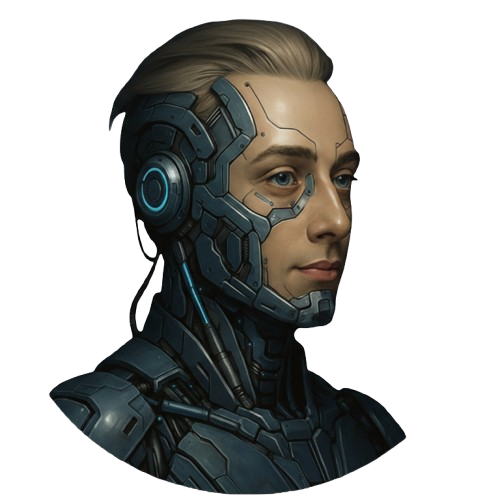

VERRIAN
IL SISTEMA ATTENDE UN GUARDIANODue salti, una lama energetica e una rete che aspetta di riaccendersi.
Record personale: —Tieni premuti direzione e azione insieme. Espandi il gioco per sfruttare lo schermo.
PRENDI IL COMANDO
Il tuo arsenale digitale.
- ← → / A D
- Muoviti ed esplora
- Spazio / ↑ W
- Salta · tieni premuto per saltare più in alto, premi di nuovo in aria per il doppio salto
- J / X
- Combo di tre fendenti · il terzo spezza gli scudi e respinge; in aria i fendenti frenano la caduta
- K / Shift
- Scatto · devia i proiettili; attraversa un attacco all’ultimo istante per la schivata perfetta, che ricarica lo scatto
- L / C
- Impulso · colpisce i bug vicini e respinge i proiettili
- R / F + J X
- Cannone: tieni R per mirare in diagonale in alto o F in basso, poi spara con J/X. Puoi muoverti, saltare o abbassarti mentre miri.
- Q / E
- Cambia arma · ogni boss sconfitto ne consegna una nuova
- S / ↓
- Abbassati · colpisci i nemici bassi e schiva i colpi alti; con Q sali o scendi dal mezzo
- P / Esc
- Pausa e ripresa
Avvicinati ai nodi per riattivarli: ripristinano parte dell’integrità e diventano checkpoint. Raccogli i frammenti e cerca le piattaforme più alte. Usa gli acceleratori verdi per saltare più in alto; le piattaforme mobili aprono nuove traiettorie. I laser arancioni segnalano il pericolo prima di attivarsi. I cristalli ambrati attivano Overdrive: nove secondi di fendenti più rapidi. Dopo i nodi, affronta il boss e attraversa il varco.
OLTRE IL PRIMO VARCO
4 mondi. Un solo guardiano.
- 01Milano · Frontiera al neonIl Duomo resiste tra le rovine di Milano. Riattiva i ponti di dati e riaccendi la città.
- 02Forgia della memoriaAttraversa le fonderie in cui i ricordi sono diventati trappole.
- 03Abisso dei glitchNell’abisso il codice si spezza. Segui i nodi ancora accesi.
- 04Cittadella del kernelIl cuore del sistema è vicino. Riaccendilo, un circuito alla volta.
Le tue ultime avventure
Le tue ultime partite su questo dispositivo compariranno qui.
I tuoi traguardi
Regole, salvataggi e accessibilità
Tre vite. Modalità Avventura con 8 punti integrità o Arcade con 6, nemici più resistenti e punti ×1,25. La lama colpisce davanti a Verrian; il doppio salto raggiunge le piattaforme più alte. Ogni nodo assegna 500 punti, ripristina due punti integrità e un impulso e attiva un checkpoint. Ogni frammento vale 40 punti; ogni dieci frammenti si recupera un impulso. Un boss sconfitto vale 3.000 punti e un varco attraversato 1.000. Il completamento di un mondo ripristina l’integrità. Tre fendenti consecutivi formano una combo: il terzo infligge danno doppio e rompe lo scudo. I guardiani si possono colpire anche dall’alto o alle spalle. Lo scatto vicino a un proiettile lo devia verso il nemico più vicino e assegna 50 punti una sola volta; raggi di energia e mine non sono deviabili. L’impulso spezza anche gli scudi.
Esplora e prendi velocità. Colpisci con J/X le capsule dei tecnici (due colpi) e le casse (tre colpi). Ogni tecnico liberato assegna 400 punti, 35 crediti e recupera 2 punti integrità; ogni tesoro vale 250 punti e 50 crediti. Le ricompense sono uniche, anche dopo un ritorno al checkpoint. Le pedane rosa lanciano verso i percorsi alti; le corsie azzurre danno accelerazione per 2,5 secondi. Guida il salto con le frecce; frena nella direzione opposta o abbassandoti. Usa i crediti nell’officina fra i mondi. In Arcade i punti sono moltiplicati per 1,25.
La demo è un’esplorazione automatica e non salva punteggi. Il gioco offre tastiera, touch, schermo intero, suoni facoltativi ed effetti ridotti; rispetta le preferenze di movimento ridotto. Comandi, obiettivi ed esiti sono anche testuali, ma il campo richiede un’interazione visiva a tempo e non dispone di un equivalente completo per lettori di schermo. Personaggi, creature e ambienti sono originali; il ritratto di Verrian deriva dall’immagine fornita.
Tempo attivo massimo 8 minuti; pausa, cambio di scheda e officina fermano il tempo. In questa edizione pubblica non serve alcun accesso: punti, record e storico sono conservati solo in questo browser e non vengono inviati a nessun server.